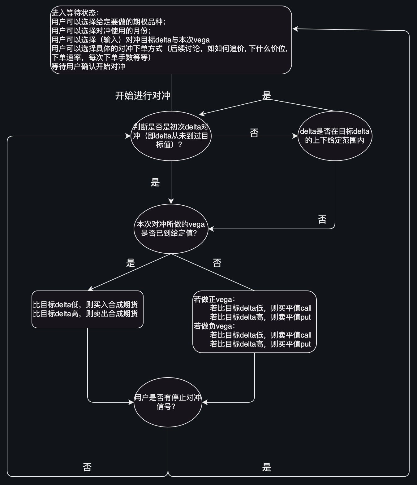

最简单情形的自动对冲
简介
本自动对冲是与策略下单相互独立，策略下单所需要的下单中保持对冲会集成在策略下单的代码中，本章的自动对冲适用于在未触发策略信号时的额外对冲操作，如果有其他自动交易的策略触发时，应该停止对应的合约的自动对冲操作。
选用近月或次月（可选）离合成期货最近的行权价对应的合成期货对作为对冲合约； 手动填入本次的目标$delta以及可以接受的一个上下范围区间，对冲必须要达到目标$delta一次后才会考虑上下范围； 例子：当前实际$delta为5%，目标$delta为20%，给定的上下容忍范围为10%，那么刚开始对冲的情形下，$delta必须到达一次20%才停止进入等待状态，后续才会判断$delta出了目标$delta20%上下10%去做对冲，也就是低于10%或高于30%.
$vega方面，不同于$delta我们给定的是目标$delta，$vega我们会给一个本次$vega，$vega我们会实时计算从本次对冲开始下的单对应的$vega，该$vega未到设定的本次要做的$vega前我们只用call或者put去做对冲，在该$vega达到本次要做的$vega后我们只会用合成期货去进行对冲；下的单对应的$vega到过一次本次要做的$vega后就再也不考虑$vega这一希腊值了
TODO:追价类型目前是'aT|b|c|M/C'的形式, 后续希望能够有更多的自定义操作，如作为买方时每次以min(对手价+2T, 前一笔+2T)的价格进行追价，待讨论
流程图

GUI代码部分
需要模块 icetcore, loguru
#!/usr/bin/env python
# -*- encoding: utf-8 -*-
'''
@File : hedger_vanilla.py
@Time : 2023/02/15 20:55:33
@Author : DingWenjie
@Contact : 359582058@qq.com
@Desc : ### 独立自动对冲模块 ###
对冲合约: 平值合成期货
需要输入: 对冲月份: 近月/次月
目标delta: 百分值
目标delta容忍范围: 正百分值
本次对冲vega: 万分值
下单模式: 可选 本方价+1/对手价-1/中间价
相邻单间隔: int,秒
追价模式:
每笔单数: int
### 对冲逻辑 ###
以目标delta为主, 首次对冲(first_time)必须delta达到目标delta,
非首次时delta必须达到目标delta的容忍范围内,
vega则是以本次对冲为准, 不看总仓位的vega, 未达到本次对冲vega时,
只买(卖)不卖(买), 到达本次对冲vega后, 使用合成期货对冲
'''
import warnings
import datetime
import os
from loguru import logger
from tkinter import ttk, Tk, Label, Entry, StringVar, Button
from copy import deepcopy
from icetcore import TCoreAPI, QuoteEvent, TradeEvent, OrderStruct
from functools import partial
from threading import Thread
from time import sleep
now = datetime.datetime.now()
TODAY_STR = datetime.date.today().strftime('%Y%m%d')
if not os.path.exists('log'):
os.mkdir('log')
warnings.simplefilter('ignore')
logger.add(f"log/runtime_{now.strftime('%Y%m%d_%H_%M_%S')}.log")
type_list = ['本方+1', '中间价', '对手-1']
interval_list = ['1秒', '2秒', '3秒', '4秒', '5秒', '6秒',
'7秒', '8秒', '9秒', '10秒', '15秒', '20秒', '30秒']
qty_list = [str(i+1) for i in range(30)]
chase_list = ['1T|1|2|M', '1T|2|2|M', '2T|1|2|M', '2T|2|2|M', '1T|2|10|M']
class APIEvent(TradeEvent, QuoteEvent):
def __init__(self):
super().__init__()
def onconnected(self, apitype: str):
pass
def ondisconnected(self, apitype: str):
pass
def ongreeksreal(self, datatype, symbol, data):
global greeks_dict
try:
greeks_dict[data['Symbol']] = data
except:
return
def onbar(self, datatype, interval, symbol, data, isreal):
pass
def onfilledreportreal(self, data):
global filled_report_dict
temp_key = '.'.join(data['Symbol'].split('.')[
2:4])
if 'A' in temp_key:
temp_key = temp_key[:-1]
filled_report_dict[temp_key][data['Symbol'].split(
'.')[4]][data['DetailReportID']] = data
def onmargin(self, accmask, data):
global cash
global initial_cash
cash = data[0]['MarketPremium']
if not cash:
try:
cash = initial_cash
except NameError:
return
def onATM(self, datatype, symbol, data):
global atm_dict
try:
if data['ATM'] == '.'.join(data['OTM-1C'].split('.')[6:]):
atm_dict['.'.join(data['Symbol'].split('.')[2:5])] = {
'call': data['OTM-1C'],
'put': '.'.join(data['OTM-1C'].split('.')[:5])+'.P.'+data['ATM']
}
else:
atm_dict['.'.join(data['Symbol'].split('.')[2:5])] = {
'put': data['OTM-1P'],
'call': '.'.join(data['OTM-1P'].split('.')[:5])+'.C.'+data['ATM']
}
except:
return
def onpositionmoniter(self, data):
global und_list
global position_dict
try:
und_list
except:
return
try:
position_dict[und_list[0]]
except:
for und in und_list:
position_dict[und] = {
'Total': {'delta': 0, 'vega': 0},
month_list[0]: {'delta': 0, 'vega': 0},
month_list[1]: {'delta': 0, 'vega': 0}
}
for und in und_list:
for position in data:
if und in position['Symbol']:
position_dict[und][position['SubKey']
]['delta'] = position['$Delta']
position_dict[und][position['SubKey']
]['vega'] = position['$Vega']
class HedgerVanilla():
def __init__(self, account, brokerid):
self.account = account
self.brokerid = brokerid
logger.warning(f'当前登录的账户为{self.account},请确认后再继续!')
global cash
global initial_cash
cash = 0
while not cash:
cash = api.getaccmargin(
self.brokerid+'-'+self.account)['MarketPremium']
initial_cash = cash
@staticmethod
def _get_0and1_symbols_and_quote():
'''根据und_list订阅该标的对应的近月次月合约greeks及atm
'''
global und_list
global greeks_dict
global atm_dict
global symbol_dict
global month_list
atm_dict = {}
greeks_dict = {}
symbol_dict = {}
for und in und_list:
all_symbol = api.getallsymbol('OPT', und.split('.')[0])
symbol_dict[und] = all_symbol
month_list = list(set([int(symbol.split('.')[4])
for symbol in all_symbol]))
month_list.sort()
month_list = [str(month) for month in month_list[:2]]
for month in month_list:
api.subATM('TC.O.'+und+'.'+month+'.GET.ATM')
for symbol in all_symbol:
if und in symbol and (month_list[0] in symbol or month_list[1] in symbol):
api.subgreeksreal(symbol)
@staticmethod
def _calculate_cashvega_given_und(und, month):
'''根据已成交的单计算给定标的本次对冲(not vega_done)已做的cashvega
'''
global filled_report_dict
vega = 0
temp_symbol = {}
for order, data in filled_report_dict[und][month].items():
if data['Symbol'] not in temp_symbol:
temp_symbol[data['Symbol']] = int(
(data['Side']*(-2)+3)*data['MatchedQty'])
else:
temp_symbol[data['Symbol']
] += int((data['Side']*(-2)+3)*data['MatchedQty'])
for symbol, data in temp_symbol.items():
try:
vega += data*greeks_dict[symbol]['Vega']*10000
except TypeError:
print(f'data:{data}')
print('vega:', greeks_dict[symbol]['Vega']*10000)
print('\n'*50)
continue
return vega/cash*10000
@staticmethod
def _get_order_given_side_and_type(order, side, type_):
'''根据买卖方向和价格类型给出order_obj
'''
global order_obj
order_obj = deepcopy(order)
order_obj.Side = side
if side == 1:
if type_ == '本方+1':
order_obj.Price = 'BID+1T'
elif type_ == '对手-1':
order_obj.Price = 'ASK-1T'
else:
order_obj.OrderType = 15
order_obj.Synthetic = 1
else:
if type_ == '本方+1':
order_obj.Price = 'ASK-1T'
elif type_ == '对手-1':
order_obj.Price = 'BID+1T'
else:
order_obj.OrderType = 15
order_obj.Synthetic = 1
return order_obj
def _do_hedging_thread(self, und, month):
'''进行对冲子线程
'''
global hedging_state_dict
global filled_report_dict
global done_vega_dict
global atm_dict
global order_type_dict
global order_interval_dict
global order_qty_dict
global chase_type_dict
done_vega_dict[und][month] = 0
logger.debug(f'当前开始{und}_{month}的对冲子线程')
if globals()['delta_entry'].get() == '':
globals()[f'warning_tag_{month}']['text'] = '请输入目标delta!'
logger.debug(f'{und}_{month}对冲子线程因未输入终止')
hedging_state_dict[und][month] = 0
return
target_delta = float(globals()['delta_entry'].get())
if globals()['delta_tol'].get() == '':
globals()[f'warning_tag_{month}']['text'] = '请输入delta范围!'
logger.debug(f'{und}_{month}对冲子线程因未输入终止')
hedging_state_dict[und][month] = 0
return
delta_tol = float(globals()['delta_tol'].get())
if globals()[f'vega_entry_{month}'].get() == '':
globals()[f'warning_tag_{month}']['text'] = '请输入本次vega!'
logger.debug(f'{und}_{month}对冲子线程因未输入终止')
hedging_state_dict[und][month] = 0
return
globals()[f'warning_tag_{month}']['text'] = ''
target_vega = float(globals()[f'vega_entry_{month}'].get())
vega_done = False
first_time = True
delta_direction_for_first_time = 0
filled_report_dict[und][month] = {}
while hedging_state_dict[und][month]:
try:
temp_order_type = order_type_dict[und][month]
temp_order_interval = int(
order_interval_dict[und][month].split('秒')[0])
temp_order_qty = int(order_qty_dict[und][month])
temp_chase_type = chase_type_dict[und][month]
logger.debug(f'当前在{und}_{month}的对冲子线程中')
logger.debug(
f'目标delta为{target_delta}, 容忍范围是{delta_tol}, 要做的vega是{target_vega}, 月份为{month}, 下单间隔为{temp_order_interval}, 每笔手数为{temp_order_qty}, 下单类型为{temp_order_type}')
temp_delta = position_dict[und]['Total']['delta']
logger.debug(
f'当前{month}月份temp_delta为{temp_delta:.0f}, 当前目标delta为{target_delta/100*cash}')
hedger_symbol_call = atm_dict[und+'.'+month]['call']
hedger_symbol_put = atm_dict[und+'.'+month]['put']
if not vega_done: # 之前未做到过vega, 则先判断当前vega是否已到
done_vega_dict[und][month] = self._calculate_cashvega_given_und(
und, month)
logger.info(
f'当前已做的vega为 {done_vega_dict[und][month]: .1f}')
if abs(done_vega_dict[und][month]) >= abs(target_vega):
logger.success('当前首次到达目标vega, 后续做合成期货!')
vega_done = True
if first_time: # 若未到达过目标delta, 则判断所做delta方向(首次)/当前是否到达目标delta
if not delta_direction_for_first_time:
if temp_delta > target_delta/100*cash >= 0 or (temp_delta > target_delta/100*cash and 0 >= target_delta):
delta_direction_for_first_time = -1
else:
delta_direction_for_first_time = 1
logger.debug(
f'初次对冲, 判断对冲方向为{delta_direction_for_first_time}')
elif (temp_delta-target_delta/100*cash)*delta_direction_for_first_time > 0:
logger.info(
f'当前first_time,当前delta与目标delta之差为{temp_delta-target_delta/100*cash}')
first_time = False
continue
order_obj = OrderStruct(Account=self.account,
BrokerID=self.brokerid,
OrderQty=temp_order_qty,
OrderType=2, # 默认限价单
Symbol='',
Side=1,
TimeInForce=1,
PositionEffect=4,
SelfTradePrevention=3,
ChasePrice=temp_chase_type)
if (first_time and temp_delta < target_delta/100*cash) or (not first_time and temp_delta < (target_delta-delta_tol)/100*cash): # 做正delta
logger.info('判断本次做正delta')
if not vega_done: # 买call or 卖put
if target_vega > 0: # 买call
order = self._get_order_given_side_and_type(
order=order_obj, side=1, type_=temp_order_type)
order.Symbol = hedger_symbol_call
else: # 卖put
order = self._get_order_given_side_and_type(
order=order_obj, side=2, type_=temp_order_type)
order.Symbol = hedger_symbol_put
order_response, _ = api.neworder(order)
else: # 买合成期货
order_call = self._get_order_given_side_and_type(
order=order_obj, side=1, type_=temp_order_type)
order_call.Symbol = hedger_symbol_call
order_put = self._get_order_given_side_and_type(
order=order_obj, side=2, type_=temp_order_type)
order_put.Symbol = hedger_symbol_put
order_response_call, _ = api.neworder(order_call)
order_response_put, _ = api.neworder(order_put)
elif (first_time and temp_delta > target_delta/100*cash) or (not first_time and temp_delta > (target_delta+delta_tol)/100*cash): # 做负delta
logger.info('判断本次做负delta')
if not vega_done: # 卖call or 买put
if target_vega < 0: # 卖call
order = self._get_order_given_side_and_type(
order=order_obj, side=2, type_=temp_order_type)
order.Symbol = hedger_symbol_call
else: # 买put
order = self._get_order_given_side_and_type(
order=order_obj, side=1, type_=temp_order_type)
order.Symbol = hedger_symbol_put
order_response, _ = api.neworder(order)
else: # 卖合成期货
order_call = self._get_order_given_side_and_type(
order=order_obj, side=2, type_=temp_order_type)
order_call.Symbol = hedger_symbol_call
order_put = self._get_order_given_side_and_type(
order=order_obj, side=1, type_=temp_order_type)
order_put.Symbol = hedger_symbol_put
order_response_call, _ = api.neworder(order_call)
order_response_put, _ = api.neworder(order_put)
else:
logger.debug('当前delta满足要求, 不做对冲')
sleep(temp_order_interval)
except Exception as error:
logger.exception(error)
hedging_state_dict[und][month] = 0
logger.success(f'{und}对冲子线程已结束!')
filled_report_dict[und][month] = {}
done_vega_dict[und][month] = '-'
def _do_hedging(self, month):
'''tk.Button绑定开始对冲按键
'''
global hedging_state_dict
if hedging_state_dict[csd_und][month]:
logger.warning(f'{csd_und}_{month}已在对冲中')
return
global target_delta_dict
global target_delta_tol_dict
global target_vega_dict
global order_type_dict
global order_interval_dict
global order_qty_dict
global chase_type_dict
target_delta_dict[csd_und] = globals()['delta_entry'].get()
target_delta_tol_dict[csd_und] = globals()['delta_tol'].get()
target_vega_dict[csd_und][month] = globals()[
f'vega_entry_{month}'].get()
order_type_dict[csd_und][month] = globals(
)[f'csd_order_type_{month}'].get()
order_interval_dict[csd_und][month] = globals(
)[f'csd_order_interval_{month}'].get()
order_qty_dict[csd_und][month] = globals(
)[f'csd_order_qty_{month}'].get()
chase_type_dict[csd_und][month] = globals(
)[f'csd_chase_type_{month}'].get()
logger.debug(f'开始对冲{csd_und}-{month}')
hedging_state_dict[csd_und][month] = 1
globals()[f'hedging_subprocess_{csd_und}_{month}'] = Thread(
target=self._do_hedging_thread, args=(csd_und, month), daemon=True)
globals()[f'hedging_subprocess_{csd_und}_{month}'].start()
def _stop_hedging(self, month):
'''tk.Button绑定停止对冲按键
'''
global hedging_state_dict
if not hedging_state_dict[csd_und][month]:
logger.warning(f'{csd_und}_{month}未在对冲')
return
global target_delta_dict
global target_delta_tol_dict
global target_vega_dict
target_delta_dict[csd_und] = ''
target_delta_tol_dict[csd_und] = ''
target_vega_dict[csd_und][month] = ''
hedging_state_dict[csd_und][month] = 0
logger.debug(f'停止对冲{csd_und}_{month}')
def main_window(self):
'''GUI窗口
'''
def go(*args):
pass
global position_dict
global und_list
global month_list
global hedging_state_dict
global hedging_state_list
global done_vega_dict
global filled_report_dict
global order_report_dict
global csd_und
global target_delta_dict
global target_vega_dict
global target_delta_tol_dict
global order_type_dict
global order_interval_dict
global order_qty_dict
global chase_type_dict
chase_type_dict = {}
order_qty_dict = {}
order_interval_dict = {}
order_type_dict = {}
target_delta_tol_dict = {}
target_vega_dict = {}
target_delta_dict = {}
csd_und = und_list[0]
order_report_dict = {}
filled_report_dict = {}
done_vega_dict = {}
hedging_state_list = ['未运行', '对冲中']
hedging_state_dict = {}
position_dict = {}
self._get_0and1_symbols_and_quote()
sleep(3)
window = Tk()
window.title('ETF期权自动对冲初版')
account_tag = Label(text='当前账户:')
account_tag.grid(row=0, column=0)
account_tag_ = Label(text=self.account)
account_tag_.grid(row=0, column=1)
cash_tag = Label(text='当前资金:')
cash_tag.grid(row=1, column=0)
cash_tag_ = Label(text=f'{cash:.2f}')
cash_tag_.grid(row=1, column=1)
for i, und in enumerate(und_list):
order_report_dict[und] = {}
done_vega_dict[und] = {
month_list[0]: '',
month_list[1]: ''
}
hedging_state_dict[und] = {
month_list[0]: 0,
month_list[1]: 0
}
filled_report_dict[und] = {
month_list[0]: {},
month_list[1]: {}
}
target_delta_dict[und] = ''
target_delta_tol_dict[und] = ''
target_vega_dict[und] = {
month_list[0]: '',
month_list[1]: ''
}
order_type_dict[und] = {
month_list[0]: 1,
month_list[1]: 1
}
order_interval_dict[und] = {
month_list[0]: 1,
month_list[1]: 1,
}
order_qty_dict[und] = {
month_list[0]: 1,
month_list[1]: 1,
}
chase_type_dict[und] = {
month_list[0]: 0,
month_list[1]: 0,
}
crt_row = 2
text_tag = Label(text='当前总体$delta(百分之):')
text_tag.grid(row=crt_row, column=0)
try:
globals()['crt_delta_total'] = Label(
text=str(round(position_dict[csd_und]['Total']['delta']/cash*100, 1)), width=9)
except KeyError:
globals()['crt_delta_total'] = Label(
text=str('-'), width=8)
globals()['crt_delta_total'].grid(row=crt_row, column=1)
text_tag = Label(text='', width=8)
text_tag.grid(row=crt_row, column=2)
crt_row += 1
crt_vega = Label(text='当前总体$vega(万分之):')
crt_vega.grid(row=crt_row, column=0)
try:
globals()['crt_vega_total'] = Label(
text=str(round(position_dict[csd_und]['Total']['vega']/cash*10000, 1)), width=9)
except KeyError:
globals()['crt_vega_total'] = Label(
text=str('-'), width=8)
globals()['crt_vega_total'].grid(row=crt_row, column=1)
crt_row += 1
def choose_und(*args):
global csd_und
global target_delta_dict
global target_delta_tol_dict
global target_vega_dict
global order_type_dict
global order_interval_dict
global order_qty_dict
global chase_type_dict
csd_und = globals()['choose_csd_und'].get()
globals()['delta_entry'].delete(0, 5)
globals()['delta_entry'].insert(0, str(target_delta_dict[csd_und]))
globals()['delta_tol'].delete(0, 5)
globals()['delta_tol'].insert(
0, str(target_delta_tol_dict[csd_und]))
for month in month_list:
globals()[f'vega_entry_{month}'].delete(0, 5)
globals()[f'vega_entry_{month}'].insert(
0, str(target_vega_dict[csd_und][month]))
if hedging_state_dict[csd_und][month]:
globals()[f'csd_order_type_{month}'].current(
type_list.index(order_type_dict[csd_und][month]))
globals()[f'csd_order_interval_{month}'].current(
interval_list.index(order_interval_dict[csd_und][month]))
globals()[f'csd_order_qty_{month}'].current(
qty_list.index(order_qty_dict[csd_und][month]))
globals()[f'csd_chase_type_{month}'].current(
chase_list.index(chase_type_dict[csd_und][month]))
text_tag = Label(text='选择对冲合约:')
text_tag.grid(row=crt_row, column=0)
globals()['choose_csd_und'] = ttk.Combobox(
window, textvariable=StringVar(), width=11)
globals()['choose_csd_und']['values'] = und_list
globals()['choose_csd_und'].current(0)
globals()['choose_csd_und'].bind('<<ComboboxSelected>>', choose_und)
globals()['choose_csd_und'].grid(row=crt_row, column=1)
crt_row += 1
text_tag = Label(text='')
text_tag.grid(row=crt_row, column=0)
crt_row += 1
text_tag = Label(text='对冲设置')
text_tag.grid(row=crt_row, column=0)
fixed_row_num = crt_row
col_num = 4
for i, month in enumerate(month_list):
crt_row = fixed_row_num
text_tag = Label(text='考虑月份')
text_tag.grid(row=crt_row, column=i*col_num)
text_tag = Label(text=month, fg='red')
text_tag.grid(row=crt_row, column=i*col_num+1)
crt_row += 1
text_tag = Label(text='该月$delta(百分之):')
text_tag.grid(row=crt_row, column=i*col_num)
try:
globals()[f'crt_delta_{month}'] = Label(
text=str(round(position_dict[csd_und][month]['delta']/cash*100, 1)), width=9)
except KeyError:
globals()[f'crt_delta_{month}'] = Label(
text=str('-'), width=8)
globals()[f'crt_delta_{month}'].grid(
row=crt_row, column=1+i*col_num)
text_tag = Label(text='', width=8)
text_tag.grid(row=crt_row, column=2+i*col_num)
crt_row += 1
crt_vega = Label(text='该月$vega(万分之):')
crt_vega.grid(row=crt_row, column=i*col_num)
try:
globals()[f'crt_vega_{month}'] = Label(
text=str(round(position_dict[csd_und][month]['vega']/cash*10000, 1)), width=9)
except KeyError:
globals()[f'crt_vega_{month}'] = Label(
text=str('-'), width=8)
globals()[f'crt_vega_{month}'].grid(
row=crt_row, column=1+i*col_num)
crt_row += 1
globals()[f'warning_tag_{month}'] = Label(text='', fg='red')
globals()[f'warning_tag_{month}'].grid(
row=crt_row, column=1+i*col_num)
crt_row += 1
if not i:
text_tag = Label(text='目标总delta(百分之):')
text_tag.grid(row=crt_row, column=i*col_num)
globals()['delta_entry'] = Entry(window, width=10)
globals()['delta_entry'].grid(
row=crt_row, column=1+i*col_num)
crt_row += 1
if not i:
text_tag = Label(text='delta范围(百分之):')
text_tag.grid(row=crt_row, column=i*col_num)
globals()['delta_tol'] = Entry(window, width=10)
globals()['delta_tol'].grid(
row=crt_row, column=1+i*col_num)
crt_row += 1
text_tag = Label(text='本次vega(万分之):')
text_tag.grid(row=crt_row, column=i*col_num)
globals()[f'vega_entry_{month}'] = Entry(window, width=10)
globals()[f'vega_entry_{month}'].grid(
row=crt_row, column=1+i*col_num)
crt_row += 1
text_tag = Label(text='选择对冲下单模式:')
text_tag.grid(row=crt_row, column=i*col_num)
globals()[f'csd_order_type_{month}'] = ttk.Combobox(
window, textvariable=StringVar(), width=7)
globals()[f'csd_order_type_{month}']['values'] = type_list
globals()[f'csd_order_type_{month}'].current(0)
globals()[f'csd_order_type_{month}'].bind(
'<<ComboboxSelected>>', go)
globals()[f'csd_order_type_{month}'].grid(
row=crt_row, column=1+i*col_num)
crt_row += 1
text_tag = Label(text='选择下单相邻间隔:')
text_tag.grid(row=crt_row, column=i*col_num)
globals()[f'csd_order_interval_{month}'] = ttk.Combobox(
window, textvariable=StringVar(), width=7)
globals()[f'csd_order_interval_{month}']['values'] = interval_list
globals()[f'csd_order_interval_{month}'].current(1)
globals()[f'csd_order_interval_{month}'].bind(
'<<ComboboxSelected>>', go)
globals()[f'csd_order_interval_{month}'].grid(
row=crt_row, column=1+i*col_num)
crt_row += 1
text_tag = Label(text='对冲每笔下单单数:')
text_tag.grid(row=crt_row, column=i*col_num)
globals()[f'csd_order_qty_{month}'] = ttk.Combobox(
window, textvariable=StringVar(), width=7)
globals()[f'csd_order_qty_{month}']['values'] = qty_list
globals()[f'csd_order_qty_{month}'].current(0)
globals()[f'csd_order_qty_{month}'].bind(
'<<ComboboxSelected>>', go)
globals()[f'csd_order_qty_{month}'].grid(
row=crt_row, column=1+i*col_num)
crt_row += 1
text_tag = Label(text='选择对冲追价方式:')
text_tag.grid(row=crt_row, column=i*col_num)
globals()[f'csd_chase_type_{month}'] = ttk.Combobox(
window, textvariable=StringVar(), width=7)
globals()[f'csd_chase_type_{month}']['values'] = chase_list
globals()[f'csd_chase_type_{month}'].current(3)
globals()[f'csd_chase_type_{month}'].bind(
'<<ComboboxSelected>>', go)
globals()[f'csd_chase_type_{month}'].grid(
row=crt_row, column=1+i*col_num)
crt_row += 1
text_tag = Label(text='')
text_tag.grid(row=crt_row, column=i*col_num)
crt_row += 1
text_tag = Label(text='当前对冲状态:')
text_tag.grid(row=crt_row, column=i*col_num)
globals()[f'hedging_state_{month}'] = Label(
text=hedging_state_list[hedging_state_dict[und][month]], fg='red')
globals()[f'hedging_state_{month}'].grid(
row=crt_row, column=1+i*col_num)
crt_row += 1
text_tag = Label(text='当前已做vega:')
text_tag.grid(row=crt_row, column=i*col_num)
globals()[f'done_vega_{month}'] = Label(text='0')
globals()[f'done_vega_{month}'].grid(
row=crt_row, column=1+i*col_num)
crt_row += 1
Button(window, text="开始对冲", width=10, command=partial(
self._do_hedging, month)).grid(row=crt_row, column=i*col_num, padx=1, pady=1)
crt_row += 1
Button(window, text="停止对冲", width=10, command=partial(
self._stop_hedging, month)).grid(row=crt_row, column=i*col_num, padx=1, pady=1)
crt_row += 1
text_tag = Label(text='')
text_tag.grid(row=crt_row, column=0)
crt_row += 1
text_tag = Label(text='注意事项:', fg='red')
text_tag.grid(row=crt_row, column=0)
crt_row += 1
text_tag = Label(
text='目标delta, delta范围, 本次vega三个输出栏不可在对冲中进行更改!(待更改)', fg='red')
text_tag.grid(row=crt_row, column=0, columnspan=6)
crt_row += 1
text_tag = Label(
text='追价方式参数为"递增tick|追几次|每次几秒|M"', fg='red')
text_tag.grid(row=crt_row, column=0, columnspan=5)
def update():
while True:
sleep(0.5)
cash_tag_['text'] = f'{cash:.2f}'
try:
globals()['crt_delta_total']['text'] = str(
round(position_dict[csd_und]['Total']['delta']/cash*100, 1))
except KeyError:
globals()['crt_delta_total']['text'] = str('-')
try:
globals()['crt_vega_total']['text'] = str(
round(position_dict[csd_und]['Total']['vega']/cash*10000, 1))
except KeyError:
globals()['crt_vega_total']['text'] = str('-')
for month in month_list:
try:
globals()[f'crt_delta_{month}']['text'] = str(
round(position_dict[csd_und][month]['delta']/cash*100, 1))
except KeyError:
globals()[f'crt_delta_{month}']['text'] = str('-')
try:
globals()[f'crt_vega_{month}']['text'] = str(
round(position_dict[csd_und][month]['vega']/cash*10000, 1))
except KeyError:
globals()[f'crt_vega_{month}']['text'] = str('-')
globals()[
f'hedging_state_{month}']['text'] = hedging_state_list[hedging_state_dict[csd_und][month]]
try:
globals()[f'done_vega_{month}']['text'] = str(
round(done_vega_dict[csd_und][month], 1))
except TypeError:
globals()[f'done_vega_{month}']['text'] = '-'
if hedging_state_dict[csd_und][month]:
order_type_dict[csd_und][month] = globals(
)[f'csd_order_type_{month}'].get()
order_interval_dict[csd_und][month] = globals(
)[f'csd_order_interval_{month}'].get()
order_qty_dict[csd_und][month] = globals(
)[f'csd_order_qty_{month}'].get()
chase_type_dict[csd_und][month] = globals(
)[f'csd_chase_type_{month}'].get()
def monitor(window):
window.after(100, update())
update_thread = Thread(
target=update, daemon=True, name='update_thread')
monitor_thread = Thread(
target=monitor, args=(window), daemon=True, name='monitor_thread')
update_thread.start()
monitor_thread.start()
window.mainloop()
if __name__ == '__main__':
api = TCoreAPI(APIEvent)
re = api.connect()
account_info = api.getaccountlist()
account = account_info[0]['Account']
brokerid = account_info[0]['BrokerID']
global und_list
und_list = ['SSE.510050', 'SSE.510300', 'SSE.510500', 'SZSE.159915']
hedger = HedgerVanilla(account=account, brokerid=brokerid)
hedger.main_window()